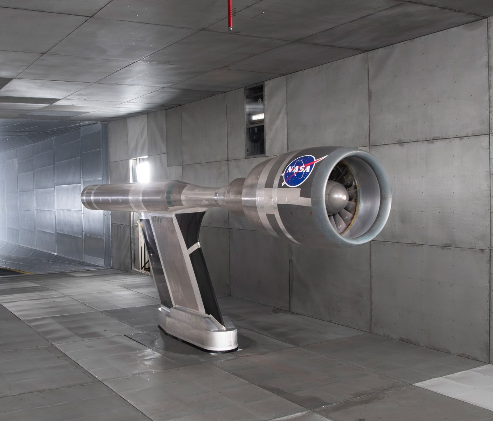

NASA prognostics data repository
Turbofan diagnostics
Remaining-life estimates and sensor traces from the FD001 engine degradation simulation.

Loading engine telemetry…
Selected test article
Remaining useful life
cyclesForecastActualCalibrated interval
Sensor telemetry
Test protocol & model evaluation
The browser replays the project's offline Extra Trees ensemble predictions for the FD001 test fleet. Actual remaining life is reconstructed from NASA’s test labels and capped at 125 cycles. The shaded interval is calibrated on separate training engines with a 90% coverage target.
Inspection priority uses the lower interval bound. High means fewer than 30 cycles, medium means 30 to under 60, and low means at least 60. Fleet counts use each engine’s last observation. Sensor flags use retrospective fleet-wide outlier and sudden-shift rules.